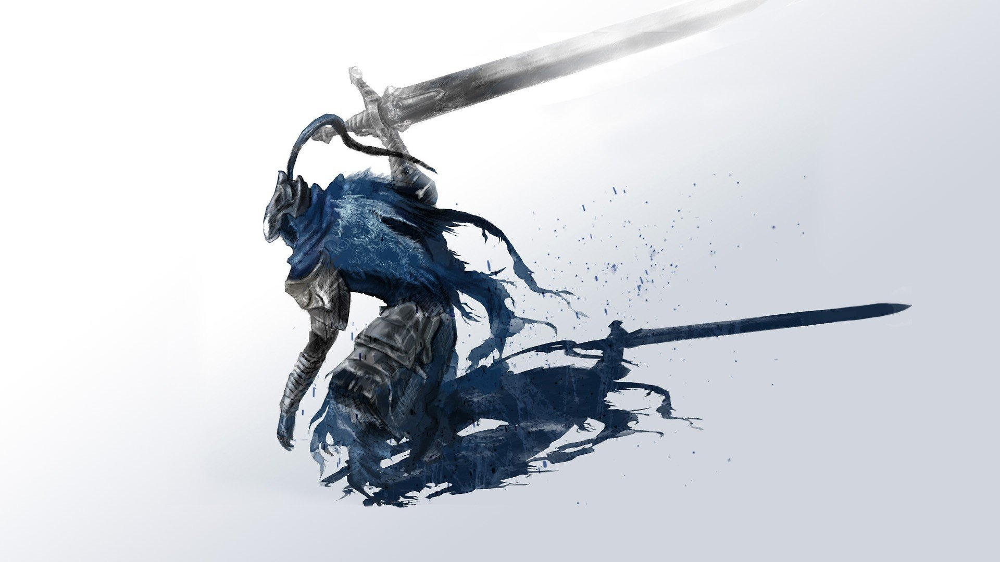

Omarchy theme proposal — light, abyss blue, steel grey.
All colors sampled from the knight artwork (the wolf's cloak and sword).
#f2f3f7, not pure #ffffff.
Tell me what to change and I'll then write colors.toml, icons.theme and the repo.